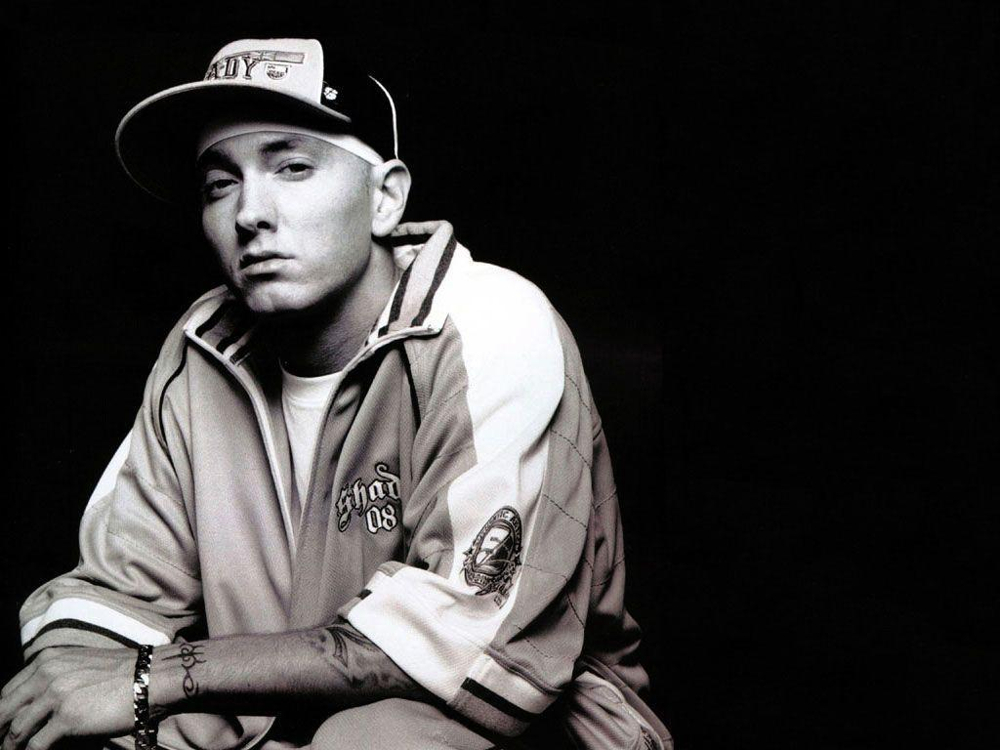
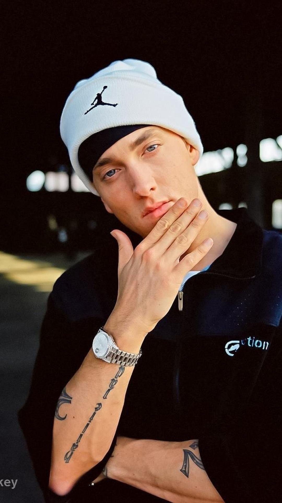
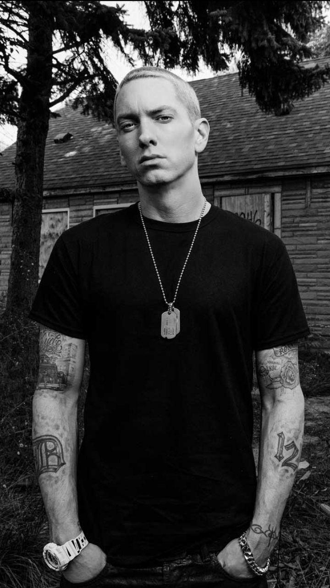
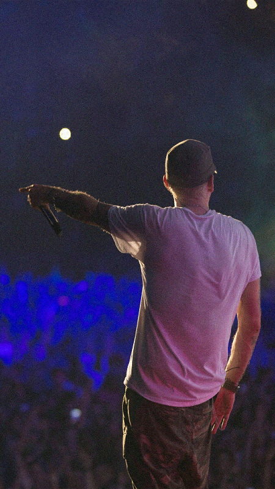

ABOUT
Marshall Bruce Mathers III (born October 17, 1972), known professionally as Eminem (/ˌɛmɪˈnɛm/; often stylized as EMINƎM), is an American rapper, songwriter, and record producer. He is credited with popularizing hip hop in middle America and is widely considered as one of the greatest rappers of all time.[2]

Eminem's global success and acclaimed works are widely regarded as having broken racial barriers for the acceptance of Caucasian rappers in popular music. While much of his transgressive work during the late 1990s and early 2000s made him widely controversial, he came to be a representation of popular angst of the American underclass and has been cited as an influence for many artists of various genres. After the release of his debut album Infinite (1996) and the extended play Slim Shady EP (1997), Eminem signed with Dr. Dre's Aftermath Entertainment and subsequently achieved mainstream popularity in 1999 with The Slim Shady LP. His next two releases, The Marshall Mathers LP (2000) and The Eminem Show (2002), were worldwide successes and were both nominated for the Grammy Award for Album of the Year. After the release of his next album, Encore (2004), Eminem went on hiatus in 2005, largely due to a prescription drug addiction.[3] He returned to the music industry four years later with the release of Relapse (2009) and Recovery, which was released the following year. Recovery was the bestselling album worldwide of 2010, making it Eminem's second album, after The Eminem Show in 2002, to be the best-selling album of the year worldwide. In the following years, he released the US number one albums The Marshall Mathers LP 2 (2013), Revival (2017), Kamikaze (2018) and Music to Be Murdered By (2020). Eminem's well-known hits include "My Name Is", "The Real Slim Shady", "The Way I Am", "Stan", "Without Me", "Mockingbird", "Not Afraid", "Love the Way You Lie", "The Monster", "River" and "Rap God", which broke the Guinness World Record for the most words in a hit single, with 1,560 words. In addition to his solo career, Eminem was a member of the hip hop group D12. He is also known for collaborations with fellow Detroit-based rapper Royce da 5'9"; the two are collectively known as Bad Meets Evil. Eminem made his debut in the film industry with the musical drama film 8 Mile (2002), playing a dramatized version of himself. "Lose Yourself", a track from its soundtrack, topped the Billboard Hot 100 for 12 weeks, the most for a solo rap song, and won the Academy Award for Best Original Song, making Eminem the first hip hop artist ever to win the award.[4] He has made cameo appearances in the films The Wash (2001), Funny People (2009) and The Interview (2014) and the television series Entourage (2010). Eminem has developed other ventures, including Shady Records, a joint venture with manager Paul Rosenberg, which helped launch the careers of artists such as 50 Cent, D12 and Obie Trice, among others. He has also established his own channel, Shade 45, on Sirius XM Radio. Eminem is among the best-selling music artists of all time, with estimated worldwide sales of over 220 million records. He was the best-selling music artist in the United States of the 2000s and the bestselling male music artist in the United States of the 2010s, third overall. Billboard named him the "Artist of the Decade (2000–2009)". He has had ten number-one albums on the Billboard 200—which all consecutively debuted at number one on the chart, making him the first artist to achieve this[5]—and five number-one singles on the Billboard Hot 100.[6] The Marshall Mathers LP, The Eminem Show, Curtain Call: The Hits (2005), "Lose Yourself", "Love the Way You Lie" and "Not Afraid" have all been certified Diamond or higher by the Recording Industry Association of America (RIAA).[7] Rolling Stone has included him in its lists of the 100 Greatest Artists of All Time and the 100 Greatest Songwriters of All Time. He has won numerous awards, including 15 Grammy Awards, eight American Music Awards, 17 Billboard Music Awards, an Academy Award, a Primetime Emmy Award and an MTV Europe Music Global Icon Award. In November 2022, Eminem was inducted into the Rock and Roll Hall of Fame.[8]
Eminem(2005)
Eminem's global success and acclaimed works are widely regarded as having broken racial barriers for the acceptance of Caucasian rappers in popular music. While much of his transgressive work during the late 1990s and early 2000s made him widely controversial, he came to be a representation of popular angst of the American underclass and has been cited as an influence for many artists of various genres. After the release of his debut album Infinite (1996) and the extended play Slim Shady EP (1997), Eminem signed with Dr. Dre's Aftermath Entertainment and subsequently achieved mainstream popularity in 1999 with The Slim Shady LP. His next two releases, The Marshall Mathers LP (2000) and The Eminem Show (2002), were worldwide successes and were both nominated for the Grammy Award for Album of the Year. After the release of his next album, Encore (2004), Eminem went on hiatus in 2005, largely due to a prescription drug addiction.[3] He returned to the music industry four years later with the release of Relapse (2009) and Recovery, which was released the following year. Recovery was the bestselling album worldwide of 2010, making it Eminem's second album, after The Eminem Show in 2002, to be the best-selling album of the year worldwide. In the following years, he released the US number one albums The Marshall Mathers LP 2 (2013), Revival (2017), Kamikaze (2018) and Music to Be Murdered By (2020). Eminem's well-known hits include "My Name Is", "The Real Slim Shady", "The Way I Am", "Stan", "Without Me", "Mockingbird", "Not Afraid", "Love the Way You Lie", "The Monster", "River" and "Rap God", which broke the Guinness World Record for the most words in a hit single, with 1,560 words. In addition to his solo career, Eminem was a member of the hip hop group D12. He is also known for collaborations with fellow Detroit-based rapper Royce da 5'9"; the two are collectively known as Bad Meets Evil. Eminem made his debut in the film industry with the musical drama film 8 Mile (2002), playing a dramatized version of himself. "Lose Yourself", a track from its soundtrack, topped the Billboard Hot 100 for 12 weeks, the most for a solo rap song, and won the Academy Award for Best Original Song, making Eminem the first hip hop artist ever to win the award.[4] He has made cameo appearances in the films The Wash (2001), Funny People (2009) and The Interview (2014) and the television series Entourage (2010). Eminem has developed other ventures, including Shady Records, a joint venture with manager Paul Rosenberg, which helped launch the careers of artists such as 50 Cent, D12 and Obie Trice, among others. He has also established his own channel, Shade 45, on Sirius XM Radio. Eminem is among the best-selling music artists of all time, with estimated worldwide sales of over 220 million records. He was the best-selling music artist in the United States of the 2000s and the bestselling male music artist in the United States of the 2010s, third overall. Billboard named him the "Artist of the Decade (2000–2009)". He has had ten number-one albums on the Billboard 200—which all consecutively debuted at number one on the chart, making him the first artist to achieve this[5]—and five number-one singles on the Billboard Hot 100.[6] The Marshall Mathers LP, The Eminem Show, Curtain Call: The Hits (2005), "Lose Yourself", "Love the Way You Lie" and "Not Afraid" have all been certified Diamond or higher by the Recording Industry Association of America (RIAA).[7] Rolling Stone has included him in its lists of the 100 Greatest Artists of All Time and the 100 Greatest Songwriters of All Time. He has won numerous awards, including 15 Grammy Awards, eight American Music Awards, 17 Billboard Music Awards, an Academy Award, a Primetime Emmy Award and an MTV Europe Music Global Icon Award. In November 2022, Eminem was inducted into the Rock and Roll Hall of Fame.[8]
EARLY LIFE

The Marshall Mathers LP 2 (2013)
Mathers was born on October 17, 1972, in St. Joseph, Missouri, the only child of Marshall Bruce Mathers Jr. and Deborah Rae "Debbie" (née Nelson).[9][10] He is of Scottish, Welsh, English, Cherokee, German, Swiss, Polish, and possibly Luxembourgish ancestry.[11][12][13] His mother nearly died during her 73-hour labor with him.[14] Eminem's parents were in a band called Daddy Warbucks, playing in Ramada Inns along the Dakotas–Montana border before they separated. His father abandoned his family when he was a year and a half old, and Marshall was raised only by his mother, Debbie, in poverty.[9] His mother later had a son named Nathan "Nate" Kane Samara.[15] At age twelve, he and his mother had moved several times and lived in several towns and cities in Missouri (including St. Joseph, Savannah, and Kansas City) before settling in Warren, Michigan, a suburb of Detroit.[16] Eminem frequently fought with his mother, whom a social worker described as having a "very suspicious, almost paranoid personality".[17] He wrote letters to his father, but Debbie said that they all came back marked "return to sender".[18] When he was a child, a bully named D'Angelo Bailey severely injured Eminem's head in an assault,[19] an incident which Eminem later recounted (with comic exaggeration) on the song "Brain Damage". Debbie filed a lawsuit against the public school for this in 1982. The suit was dismissed the following year by a Macomb County, Michigan judge, who said the schools were immune from lawsuits.[14] For much of his youth, Eminem and his mother lived in a working-class, primarily black, Detroit neighborhood. He and Debbie were one of three white households on their block, and Eminem was beaten several times by black youths.[18]Eminem was interested in storytelling, aspiring to be a comic book artist before discovering hip hop.[20] He heard his first rap song ("Reckless", featuring Ice-T) on the Breakin' soundtrack, a gift from Debbie's half-brother Ronnie Polkingharn. His uncle was close to the boy and later became a musical mentor to him. When Polkingharn committed suicide in 1991, Eminem stopped speaking publicly for days and did not attend his funeral.[18][21]
CAREER
EMINEM (1996)
Eminem's global success and acclaimed works are widely regarded as having broken racial barriers for the acceptance of Caucasian rappers in popular music. While much of his transgressive work during the late 1990s and early 2000s made him widely controversial, he came to be a representation of popular angst of the American underclass and has been cited as an influence for many artists of various genres. After the release of his debut album Infinite (1996) and the extended play Slim Shady EP (1997), Eminem signed with Dr. Dre's Aftermath Entertainment and subsequently achieved mainstream popularity in 1999 with The Slim Shady LP. His next two releases, The Marshall Mathers LP (2000) and The Eminem Show (2002), were worldwide successes and were both nominated for the Grammy Award for Album of the Year. After the release of his next album, Encore (2004), Eminem went on hiatus in 2005, largely due to a prescription drug addiction.[3] He returned to the music industry four years later with the release of Relapse (2009) and Recovery, which was released the following year. Recovery was the bestselling album worldwide of 2010, making it Eminem's second album, after The Eminem Show in 2002, to be the best-selling album of the year worldwide. In the following years, he released the US number one albums The Marshall Mathers LP 2 (2013), Revival (2017), Kamikaze (2018) and Music to Be Murdered By (2020). Eminem's well-known hits include "My Name Is", "The Real Slim Shady", "The Way I Am", "Stan", "Without Me", "Mockingbird", "Not Afraid", "Love the Way You Lie", "The Monster", "River" and "Rap God", which broke the Guinness World Record for the most words in a hit single, with 1,560 words. In addition to his solo career, Eminem was a member of the hip hop group D12. He is also known for collaborations with fellow Detroit-based rapper Royce da 5'9"; the two are collectively known as Bad Meets Evil. Eminem made his debut in the film industry with the musical drama film 8 Mile (2002), playing a dramatized version of himself. "Lose Yourself", a track from its soundtrack, topped the Billboard Hot 100 for 12 weeks, the most for a solo rap song, and won the Academy Award for Best Original Song, making Eminem the first hip hop artist ever to win the award. He has made cameo appearances in the films The Wash (2001), Funny People (2009) and The Interview (2014) and the television series Entourage (2010). Eminem has developed other ventures, including Shady Records, a joint venture with manager Paul Rosenberg, which helped launch the careers of artists such as 50 Cent, D12 and Obie Trice, among others. He has also established his own channel, Shade 45, on Sirius XM Radio. Eminem is among the best-selling music artists of all time, with estimated worldwide sales of over 220 million records. He was the best-selling music artist in the United States of the 2000s and the bestselling male music artist in the United States of the 2010s, third overall. Billboard named him the "Artist of the Decade (2000–2009)". He has had ten number-one albums on the Billboard 200—which all consecutively debuted at number one on the chart, making him the first artist to achieve this[5]—and five number-one singles on the Billboard Hot 100.[6] The Marshall Mathers LP, The Eminem Show, Curtain Call: The Hits (2005), "Lose Yourself", "Love the Way You Lie" and "Not Afraid" have all been certified Diamond or higher by the Recording Industry Association of America (RIAA).[7] Rolling Stone has included him in its lists of the 100 Greatest Artists of All Time and the 100 Greatest Songwriters of All Time. He has won numerous awards, including 15 Grammy Awards, eight American Music Awards, 17 Billboard Music Awards, an Academy Award, a Primetime Emmy Award and an MTV Europe Music Global Icon Award. In November 2022, Eminem was inducted into the Rock and Roll Hall of Fame.[8]LEGACY
SLIM SHADY
Credited for popularizing hip hop to a Middle American audience, Eminem's unprecedented global commercial success and acclaimed works for a white rapper is widely recognized for breaking racial barriers for the acceptance of white rappers in popular music.[415] Rising from rags to riches, Eminem's anger-fueled music represented widespread angst and the reality of American underclass.[416] He has been greatly influential for artists of various genres. Stephen Hill, the then vice president of African American-themed television network BET (Black Entertainment Television), said in 2002: "Eminem gets a pass in the same vein that back during segregation black folks had to be better than average, had to be the best, to be accepted ... he is better than the best. In his own way, he is the best lyricist, alliterator and enunciator out there in hip-hop music. In terms of rapping about the pain that other disenfranchised people feel, there is no one better at their game than Eminem." In 2002, the BBC said that the perception of Eminem as a "modern-day William Shakespeare" was comparable to the reception of American singer Bob Dylan: "Not since Bob Dylan's heyday in the mid-1960s has an artist's output been subjected to such intense academic scrutiny as an exercise in contemporary soul-searching. US critics point to [Eminem's] vivid portraits of disenfranchised lives – using the stark, direct language of the street – as an accurate reflection of social injustice." In addition, the BBC highlighted that, "Where parents once recoiled in horror [to his music], there now seems a greater willingness to acknowledge a music that is striking such a chord among the American young, angry white underclass."[418] Dan Ozzi of Vice highlighted that Eminem during the early 2000s was "the one artist high school kids seemed to unanimously connect with.... he represented everything high school years are about: blind rage, misguided rebellion, adolescent frustration. He was like a human middle finger. An X-rated Dennis the Menace for a dial-up modem generation.
ACHIEVEMENTS AND HONORS
EMINEM
With global sales of over 220 million records, Eminem is one of the best-selling music artists of all time.[437] He has had thirteen number-one albums on the Billboard 200: nine solo, two with D12 and one with Bad Meets Evil.[438] He was the bestselling music artist from 2000 to 2009 in the US according to Nielsen SoundScan.[439] He was also the bestselling male music artist in the United States of the 2010s.[440] He has sold 47.4 million albums in the country[441] and 107.5 million singles in the US.[442] The Marshall Mathers LP, The Eminem Show, Curtain Call: The Hits, "Lose Yourself", "Love the Way You Lie" and "Not Afraid" have all been certified Diamond or higher by the Recording Industry Association of America (RIAA).[7][443] Eminem has over ten billion views of his music videos on his YouTube Vevo page,[444] and in 2014 Spotify named him the most-streamed music artist of all time. Among Eminem's awards is 15 Grammy Awards,[151] eight American Music Awards and 17 Billboard Music Awards, Billboard named him the "Artist of the Decade (2000–2009)".[445] In 2013, he received the Global Icon Award at that year's MTV Europe Music Awards ceremony.[446] His success in 8 Mile saw him win the 2002 Academy Award for Best Original Song for his song "Lose Yourself", co-written with Jeff Bass and Luis Resto, making him the first rapper to receive the award.[447] He also won the MTV Movie & TV Awards for Best Actor in a Movie and Best Breakthrough Performance[448] and the Critics' Choice Movie Award for Best Song for "Lose Yourself".[449] Eminem has also been included and ranked in several publications' lists. Rolling Stone included him in its list of the 100 Greatest Artists of All Time and the 100 Greatest Songwriters of All Time.[421][450] He was ranked 9th on MTV's Greatest MCs of All Time list.[451][452] He was ranked 13th on MTV's 22 Greatest Voices in Music list[453] and 79th on the VH1 100 Greatest Artists of All Time lists.[454] He was ranked 82nd on Rolling Stone's "The Immortals" list.[455] In 2010, MTV Portugal ranked Eminem the 7th biggest icon in popular music history.[456] In 2012, The Source ranked him 6th on their list of the Top 50 Lyricists of All Time,[457] while About.com ranked him 7th on its list of the 50 Greatest MCs of Our Time (1987–2007).[458] In 2015, Eminem was placed third on "The 10 Best Rappers of All Time" list by Billboard.[459] In 2008, Vibe readers named Eminem the Best Rapper Alive.[460] In 2011, Eminem was labeled the "King of Hip-Hop" by Rolling Stone based on an analysis of album sales, chart positions, YouTube views, social media following, concert grosses, industry awards and critical ratings of solo rappers who released music from 2009 to the first half of 2011.[461] Eminem was also inducted in the Rock and Roll Hall of Fame Class of 2022, alongside Duran Duran and Dolly Parton.